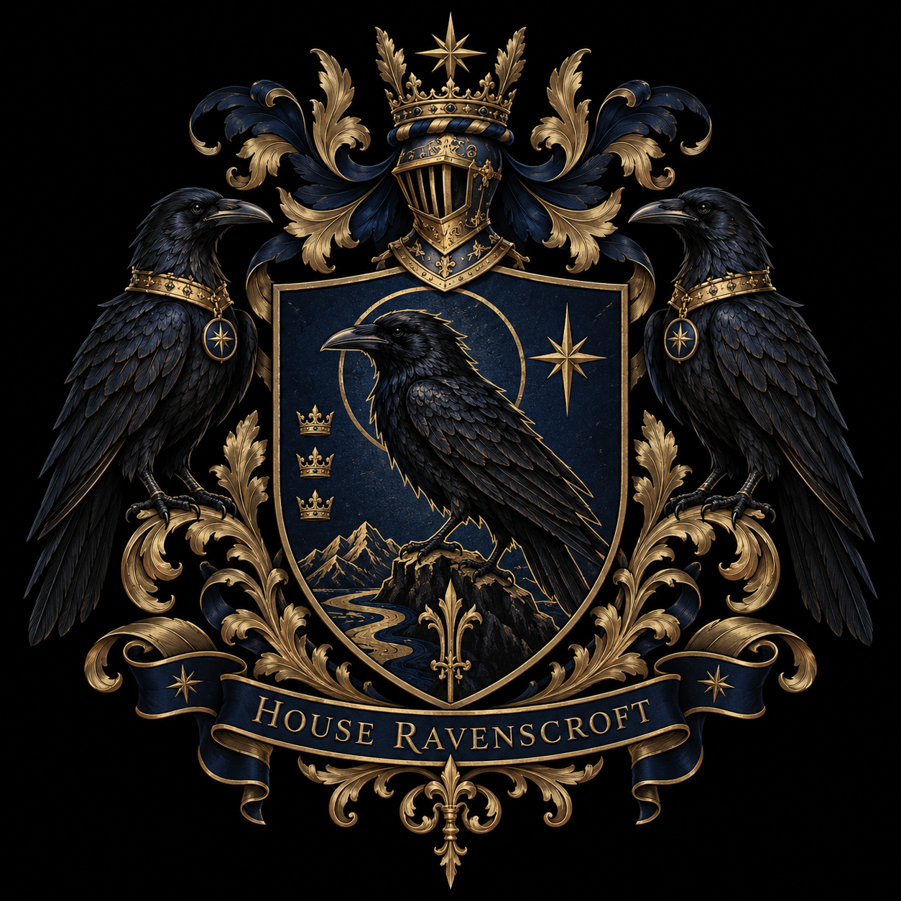
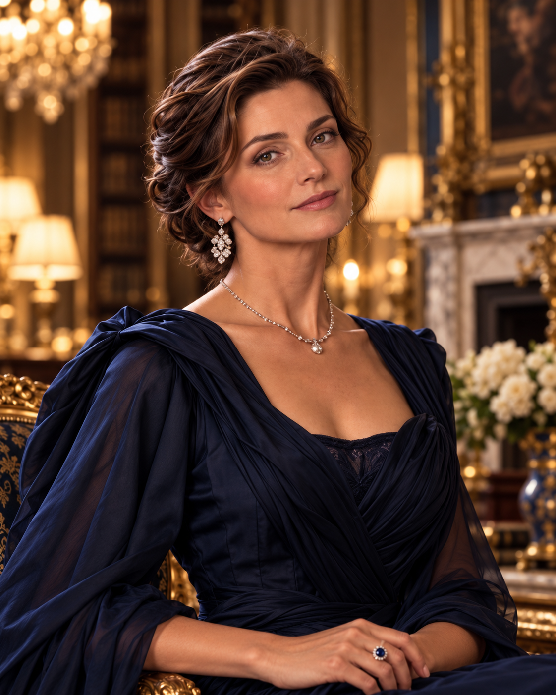

Blood & House
Birth line, marriage, House office, inheritance, family governance, and dynastic obligation.

House Ravenscroft • World Archive
Great Houses • hidden governance • families • institutions • 2026 canon
The World Behind the World
House Ravenscroft is the dominant North American Great House within a contemporary international system of dynastic families, private institutions, patronage networks, intelligence structures, elite education, and discreet power.
The public world remains recognizable: universities, corporations, foundations, estates, professions, politics, philanthropy, and ordinary social life are real. The hidden architecture works through them rather than replacing them.

Start Here
Each route leads into the same canon from a different angle: setting, dynasty, family, people, or institutions.
Understand secrecy, technology, geography, formation, and how the hidden system coexists with contemporary public life.
Setting guide → 02Explore Great Houses, cadet lines, allied dynasties, House governance, heraldry, influence, and inter-House relationships.
House directory → 03Move through bloodlines, marriages, households, branches, descendants, and the genealogy links that connect person dossiers.
Family archive → 04Open individual Master A and Master B dossiers with biography, career, relationships, Order status, patronage, wealth, and visual canon.
People directory → 05Follow induction, knowledge, clearance, compartments, authority, governance, and the line between House power and Order power.
Order overview → 06Trace the companies, universities, foundations, schools, estates, residences, and recurring locations where the world becomes tangible.
Explore institutions →Featured Great House
Old power adapted to modern institutions.
Ravenscroft influence reaches through family governance, elite education, patronage, intelligence, security, professional networks, philanthropy, and long-term stewardship. Its members are not interchangeable operatives: they maintain real careers, families, interests, rivalries, flaws, and private lives.
Featured Dossiers
The directory will grow substantially; these four records currently form the most complete live cluster.

Aviation, infrastructure, global transportation, strategic operations.

Neurology, translational neuroscience, research leadership, philanthropy.
Architectural conservation, historic preservation, heritage stewardship.
Behavioral psychology, social development, sorority/alumnae networks.
Family Navigation
As the archive grows, individual names stay out of the global navigation. The genealogy becomes the primary way to move through branches, marriages, households, and generations.
Live names open completed dossiers. Established relatives without migrated pages remain visible as plain-text nodes, so the family structure can expand without broken links.
Open Ravenscroft GenealogyHow Power Works
The archive deliberately keeps these categories distinct instead of collapsing them into a single “rank.”
Birth line, marriage, House office, inheritance, family governance, and dynastic obligation.
Induction, rites, knowledge, clearance, compartment access, warrants, and operational authority.
Mentorship, sponsorship, placement, networks, protégées, resources, and long-term influence.
Real careers and organizations: universities, companies, foundations, medical institutes, schools, and cultural bodies.
Marriage, relationships, homes, friendships, interests, flaws, personality, and ordinary human choices.
Intelligence, security, discretion, protected systems, and specialist authorities—unevenly distributed and separately controlled.
Archive Status
This wiki is being migrated from a much larger established canon. A missing page means the record has not been migrated yet—not that the person, institution, branch, or House does not exist.
Archive Principle
Power is most durable when it looks like ordinary life.